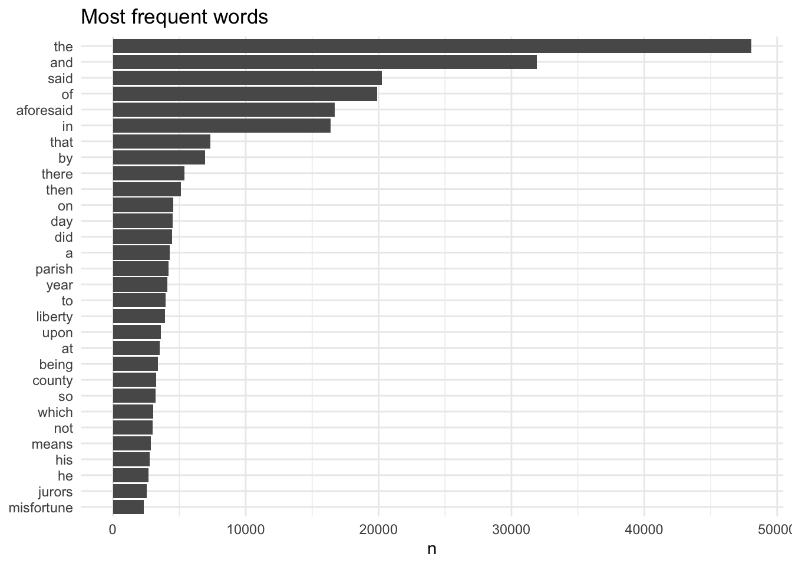
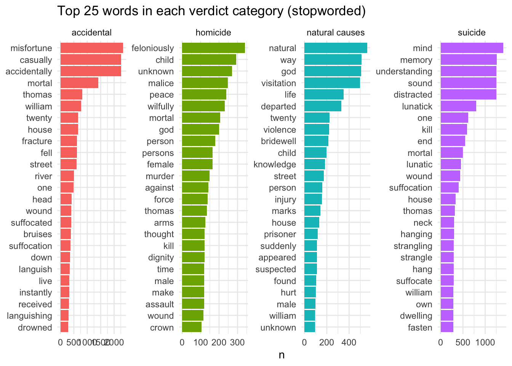
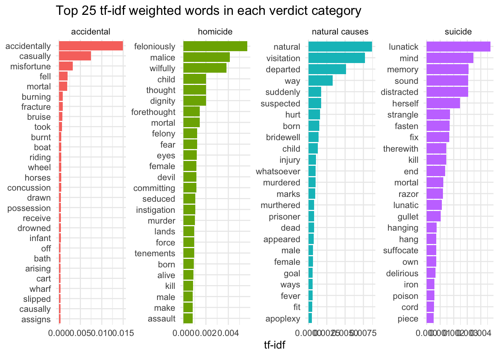
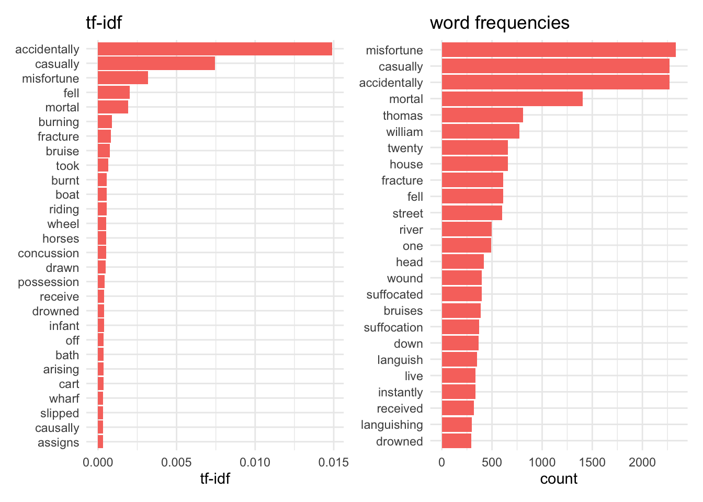
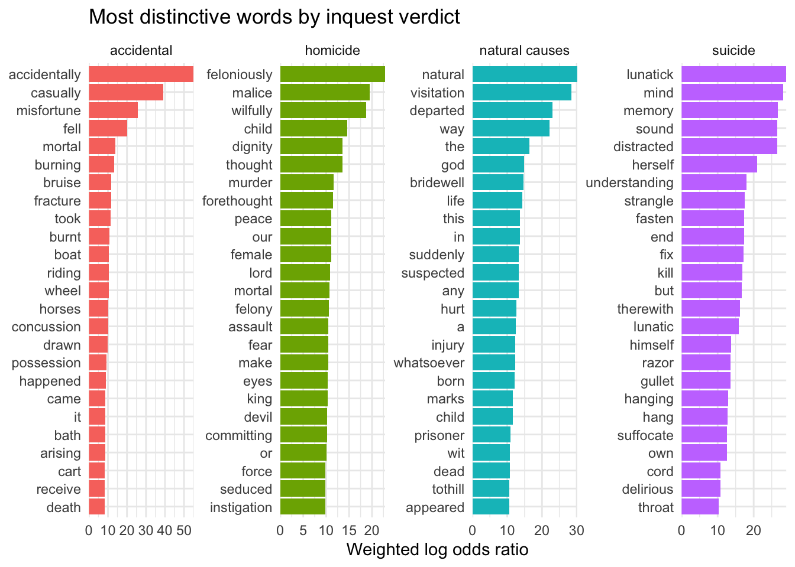
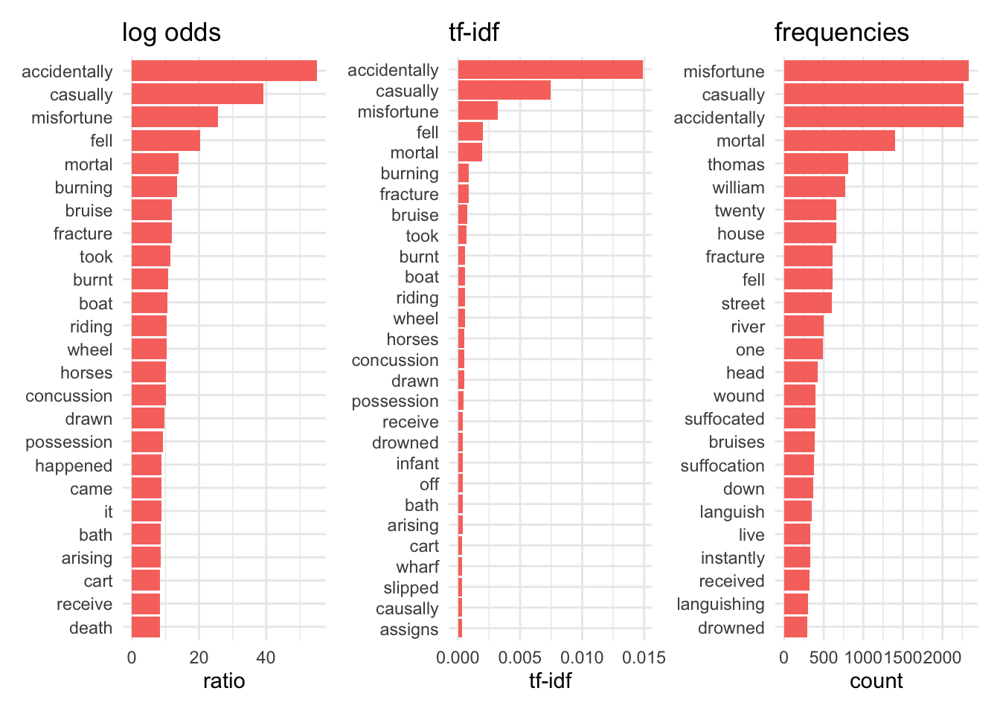
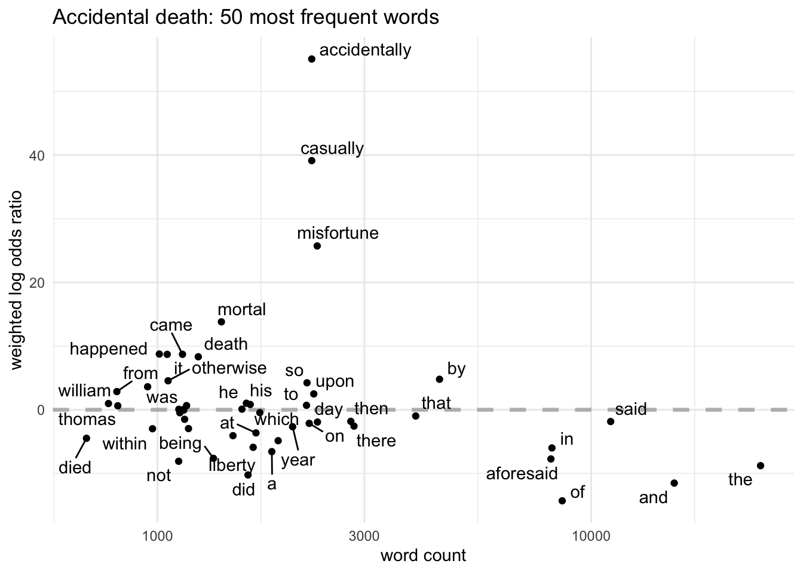
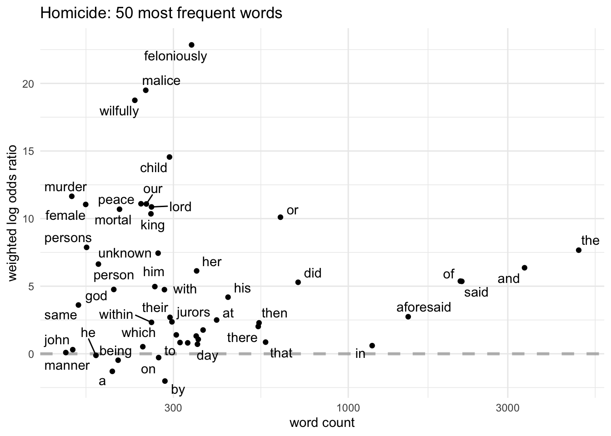
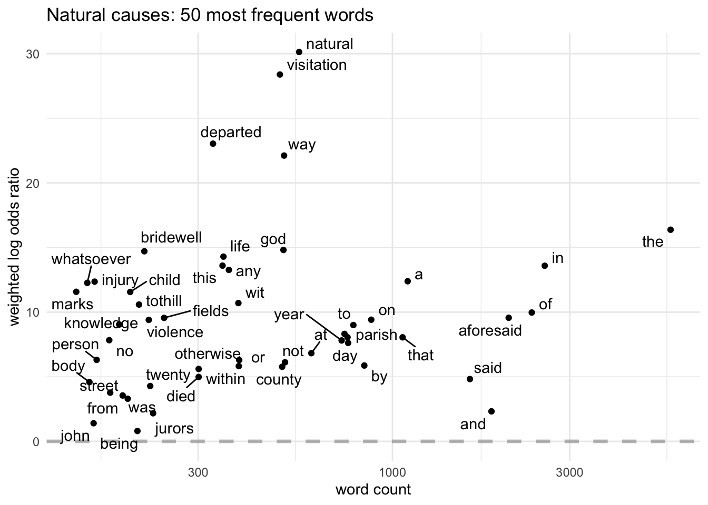
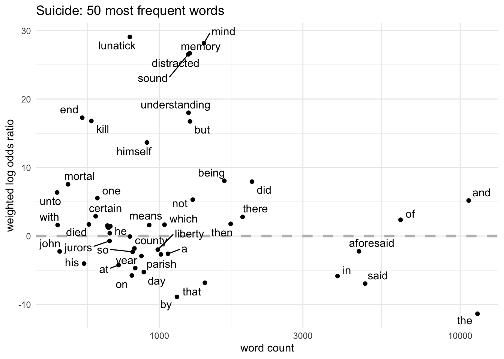

Westminster Coroners Inquests 1760-1799, Part 2
LL
text analysis
death
Introduction
This is the second of a two-part series about the Westminster Coroners’ Inquests data. See part 1 for more detail about the source of the data, and my initial explorations of the summary data.
This post focuses more on the text of inquisitions (the formal legal record of the inquest’s findings and verdict). An example here. I’ll also use the verdicts data, so that I can compare texts in each verdict category.
I’ll be borrowing extensively from Text Mining with R, and quanteda tutorials.
The data
Undetermined is a small verdict category, and I’m going to exclude it from most analysis because I think it’s likely to be confusingly miscellaneous. (OK, and because it’s easier to fit 4 categories into plots.)
I began analysing the texts with some simple word counting in part 1, but before digging deeper, I need to do some additional work. It’s often noted that, however sophisticated your data analysis techniques, most of the work is preparing and cleaning your data first, and getting this (often very boring) process right is crucial to getting valid results.
A big problem with the inquisitions is that the amount of content actually describing the circumstances of a death is often a very small proportion of the document as a whole. This can be divided into two distinct issues:
- large blocks of text which don’t vary between texts (I’ll call them “boilerplate”) and can therefore be discarded in their entirety to get them out of the way
- frequently used words or short phrases; in this case, not so much what linguists call “function words” (like “the” “or” “and”) as formulaic legal and bureaucratic language.
Here’s one of the texts:
City and Liberty of Westminster , In the County of Middlesex ,} to wit, An Inquisition Indented, taken for our Sovereign Lord the King, at the House of Richd. Tyler Chapel Street oxford Street Parish of Saint Anne Soho within the Liberty of the Dean and Chapter of the Collegiate Church of St. Peter, Westminster , in the County of Middlesex , the twentieth day of February 1797 in the thirty Seventh Year of the Reign of our Sovereign Lord GEORGE the Third, by the Grace of God, of Great-Britain, France, and Ireland King, Defender of the Faith, and so forth, before Anthony Gell , Esq. Coroner of our said Lord the King for the said City and Liberty, on View of the Body of Humphris Jones then and there lying dead, upon the Oath of the several Jurors whose Names are here under written, and Seals affixed, good and lawful Men of the said Liberty, duly chosen, who being then and there duly sworn and charged to enquire for our said Lord the King, when, how, and by what Means the Said Humphris Jones came to his Death, do upon their Oath say that, the Said Humphis Jones, on the nineteenth day of February in the Year aforesaid in Oxford Street Street in the County of Middlesex died, by the Visitation of God in a natural Way To Wit of an Apoplexey of god and not otherwise
IN WITNESS whereof, as well the said Coroner as the said Jurors, have to this Inquisition set their Hands and Seals the Day, Year, and Place first above written.
Anthy. Gell Coroner } Wm Daviesford John Hamstead Willm Hall Wim Webster John Bell
Jas Cragg Thos Gibson W Knightlie George John Yare Joseph Wm Walker
boilerplate
There are two large chunks of text that are almost the same in every inquisition: everything from the beginning to “do upon their oath say That”, and from “IN WITNESS whereof” to the end. The only variations within these sections are a) the insertion of the names of the deceased, jurors, dates and parish in which the death occurred (all useful data, but not relevant to the current analysis); and b) the jurors’ names may be listed in the first chunk or at the very end of the second. These conventions were so well-established that many of the inquisitions are on pre-printed forms (including the example above).
In fact, in many inquisitions the boilerplate accounts for most of the text: the average length of the remaining text is only 148.5 words.
So it makes sense and is fairly straightforward to get rid of this stuff entirely before analysing the texts. (The gory details are in the R code.) Here’s what the stripped version of the first example looks like:
that, the Said Humphis Jones, on the nineteenth day of February in the Year aforesaid in Oxford Street Street in the County of Middlesex died, by the Visitation of God in a natural Way To Wit of an Apoplexey of god and not otherwise
From here onwards I’ll use the texts with the boilerplate removed.
stopwords
The legal formula and locally specific words necessitated the compilation of a custom stopwords list (again the details can be seen in the code). This discussion is included mainly to highlight how the construction of stopwords for textmining a historical corpus can’t be a one-size-fits-all exercise. You might start with a generic function words list, but to do serious analysis you’ll need to dig into your specific dataset and understand something about its historical context.
Here are the 30 most frequently used words in the stripped-down texts:
Some of the legal terms aren’t obvious without knowledge of the texts and which are very context dependent. For example, I know that in inquisitions “said” is not referring to people talking, but appears in phrases like “by what Means the Said Humphris Jones came to his Death” and is a synonym for “aforesaid”. In this set of texts, I also know that words like “county”, city”, “parish”, “liberty” (that’s an administrative unit, not the abstract ideal) or “oath” are not content words as they might be in many corpora. To this I can add words like “jurors”, “died” and “death”, “Middlesex” and “Westminster”.
There’s a final set of words I want to remove from analysis: people’s first names. This again is highly context-dependent. If you’re mining the novels of Jane Austen, people’s given names are significant. But in this case the names of individuals are not meaningful (and, to make things worse, 18th-century Londoners were not very creative when it came to naming their children). Fortunately, I already have name data in the shape of the London Lives tagged XML, which I can use to make a custom dictionary.
Top words in verdict categories
The first post on the inquests showed a number of significant differences in the character of inquests and outcomes by analysing the summary data and word counts in part 1. It seems more than likely that the language used in association with the different verdicts will vary significantly too. What can comparisons of the “top” words in each verdict tell us?
But there are different ways of thinking about “top words” and I’m going to compare three of them:
- simple word frequencies (with stopwords)
- TF-IDF
- weighted log odds ratios
Word frequencies
For this, I’m going to use quanteda, particularly its textstat_frequency tutorial.
I start by building a corpus, to which I apply my stopwords. Then I can use ggplot to compare the top word frequencies for each category.

This is pretty good. There are clear differences between the verdict categories. In each category, there are various words that are part of legally required key phrases:
- “misfortune”, “casually”, “accidentally” (for accidental deaths);
- “feloniously”, “malice”, “peace”, “wilfully” (homicide);
- “natural”, “god”, “visitation” (natural causes);
- “mind”, “sound”,“understanding”, “distracted”, “lunatick” (suicide).
In the accidental deaths category, many of the top 30 words are immediately revealing, referring directly to causes of death - drowning (and thames), suffocation, carts and horses; ground almost certainly alludes to falls - suggesting that these are the most common causes of accidental deaths. People might die instantly or languish/live for a while (perhaps dying in hospital if so).
Many suicide category words, too, are grimly descriptive - suffocation, hanging, strangling, neck, throat, fasten and fix. (Perhaps iron and piece are less immediately obvious?) This suggests that the majority of suicides in later 18th-century London were by hanging.
In contrast, the words for homicide seem - surprisingly - much less evocative. Languish/live turn up again but apart from that we don’t really get beyond legal phrases (“make an assault”, “malice aforethought”, “moved/seduced by the devil”, and so on). This suggests a couple of things. There is probably more legal verbiage in an inquisition with a homicide verdict because of the high likelihood that it will trigger a criminal prosecution (sometimes the inquisition might actually be used as a formal indictment at a later trial). And, for much the same reason, the rest of the language in homicide inquisitions is probably more detailed, and therefore more varied and less repetitious than in the other categories; remember that the first post has already shown that they’re the longest.
The top 30 in natural causes has some curious (at first sight) features. The reason bridewell (which was at Tothill Fields) is near the top is fairly straightforward: an inquest was automatically held for any prisoner who died in custody, and these almost always returned a verdict of natural causes. The presence of suspected, murdered and violent may at first seem odd, but they all point to the fact that inquests were often held because of local suspicions about a death. If nothing could be proved, the verdict would be natural causes.
Underlining the limitations of quantification without closer reading, unknown in homicide and in natural causes have quite different meanings: in homicides it almost always refers to an unknown perpetrator, but in natural causes it refers to the deceased and points to the number of natural causes inquests on poor “strangers” who had died of cold or starvation.
TF-IDF (term frequency-Inverse document frequency)
So, a simple analysis of word frequencies has produced some interesting results. Well, not that simple. In order to get anywhere at all I had to laboriously compile stopword lists, which required considerable existing knowledge of this type of document, are very subjective, and really quite crude. Can I do better?
These problems can be addressed by “term frequency-inverse document frequency”, for which I’ll draw on the Tidy Text Mining tutorial.
- Term frequency (tf) is simply the number of times a term (word) appears in a document.
- Document frequency refers to the number of documents in a collection that contain a particular term. In the context of this post, “document”=“verdict category”, and “collection”= “all the inquisitions”.
- Inverse document frequency (idf) reduces the weighting of terms that occur very frequently in a collection and increases the weighting of terms that rarely occur. So the idf of a rarely-used term is high, and the idf of a term that appears in every document is 0.
- Finally, Term frequency-inverse document frequency (tf-idf) multiplies the term frequency by the inverse document frequency to get a score of the “importance” of each term.
The idea is that tf-idf for a term is:
- highest when the term occurs many times in a very small number of documents
- lower when the term occurs fewer times in a document, or occurs in many documents
- lowest when the term occurs in virtually all documents. (source)

Some interesting differences! But that’s a lot to take in. Let’s zoom in and compare the stopworded top 25 to the tf-idf top 25 for the biggest category, accidental deaths.

Even when the same words appear, tf-idf often ranks them rather differently. “Accidentally”, “casually” and misfortune still float to the top but are re-ordered because “accidentally” only appears in the accidental verdict category (so it has a high idf).
An interesting difference is that “boat” and “drowned” appear in the tf-idf list, versus “river” and “drowned” in the stopworded list and I think this may be related to the higher ranking of “fell” in tf-idf. From tf-idf we get the more specific information that people drowned by falling off boats, rather than telling us what kind of water they drowned in (which probably wasn’t always the river). Tf-idf has definitely brought up more specific cause of death words, such as burnt/burning, riding/horses.
But why has suffocated/suffocation disappeared? Is it really that insignificant? Remember that, if a term appears in all the categories, tf-idf automatically gives it a score of 0, even if its use is variable between categories. But it’s pretty easy for a word to appear in all four verdict categories and still be of significance.
Weighted log odds ratios
I’ve written about weighted log odds ratios before, and even used the coroners inquests as an example, so this is a good opportunity to take a closer look at how it compares to other methods. I’ll use Julia Silge’s introduction to the Tidylo package.
Weighted log odds ratios can help to address my problem with TF-IDF.
One of the problems with using tf-idf for stylistic analysis is that if everyone uses [the terms being analysed] they’ll get a score of 0 even if some people use them a whole lot more than others. That’s because the “idf” in “tf-idf” is for inverse document frequency… The inverse document frequency is calculated as the natural log of the total number of documents (=authors, so 18) divided by the number of documents (authors) who use the phrase (in this case everyone uses it, so 18 again). The natural log of 18/18 = natural log (1) = 0. So you multiply the tf*0=0.

Now let’s compare all the results for accidental:

I’m quite pleased with the results of this exercise, not least because it suggests that I have at least two potentially helpful methods of text analysis that save me the slog of constructing stoplists. (Or, looked at from a different angle, could be used to help construct stoplists more easily.)
I’ll finish with a set of charts plot the log odds of the 50 most common words in each category, so I can look at some of the variations in more detail.




Resources and further reading
Westminster Coroners’ Inquests Data
London Lives Coroners’ Inquests
Visualizing Causes of Death in Georgian London
“The coroner frequents more public-houses than any man alive”
Craig Spence, Accidents and Violent Death in Early Modern London, 1650-1750 (Boydell & Brewer, 2016)
John Landers and Anastasia Mouzas, ‘Burial Seasonality and Causes of Death in London 1670–1819’, Population Studies, 42 (1988), 59–83